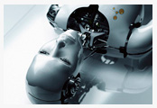

- Навигация
- Ссылка
- Ссылка
- Ссылка
- Ссылка
- Ссылка
- Ссылка
- Ссылка
- Ссылка
- Ссылка
- Ссылка
- Ссылка
- Ссылка
- Ссылка
- Популярное
- Тетрис против контры
- Хакер №9
- Перевёртыш
- 10 лучших прыжков в истории
- Расстрел мирных жителей
- Серъёзная авария
- Прыжок
- Computer Bild №17
- Креативные работы
- Комментарии
- kivavladimir
Жуткое ДТП с кострацией. Все на асфальте
- del
Смотрите на тетку на заднем плане
- nmaster
Подборка падений красивых девушек
- muzoff
Drifter
- kivavladimir
Жутка авария во время Дрифта
Бытовой робот – друг и помощник
Когда же наступят те времена, когда мы сможем сказать: «Железка, остаешься за старшего», уходя из дома или квартиры, оставив своих роботизированных домашних помощников? Возможно, этот момент уже не так далеко, как нам кажется. И наши мечты обладать личным роботом – не последствия просмотра фантастических фильмов. Ведущие разработчики говорят, что уже через 10-15 лет робототехника выйдет на новый уровень и нам самим придётся заучивать слова команд и полировать тело роботизированных домохозяек. Но, что же сейчас, самыми явными представителями домашних помощников из мира роботов можно смело сказать – это бытовые роботы.
Именно они являются наиболее вероятными кандидатами на закадычную дружбу с людьми. Бытовые роботы – это роботизированная техника, способная развлекать человека и общаться с ним, помогать человеку в быту, облегчая его жизнь и освобождая от рутинной работы. Существует несколько видов бытовых роботов, различных по возложенным на них функциям. Соответственно, они устроены не одинаково и выглядят по-разному.
Первый тип – роботы-помощники. Бытовой робот этого типа предназначен для помощи в ведении домашнего хозяйства. Большинство таких роботов имеют платформу на колесной базе с незначительным расстоянием от днища до пола. Первыми выделим универсальных роботов-помощников. Подобные бытовые роботы не имеют заложенной раз и навсегда линии поведения, способны выполнять несколько функций – транспортировать столовые принадлежности и прочие мелкоразмерные предметы, следовать за человеком, пылесосить пол, патрулировать территорию. Задача задается хозяином на персональном компьютере с подключенным приемопередатчиком через программу Map-n-Zap. Используя Microsoft Sheduler, владелец может программировать робота на совершение действий по расписанию.
Одним из самых популярных производителей универсальных роботов является компания Probotics с их серией Cye. Роботами Probotics можно управлять как используя установленную на домашнем ПК программу, так и через интернет-сервер WebBots – при условии, что робот подключен к сети Интернет (используется dial-up соединение). Из-за крошечного клиренса бытовой робот не годится на роль вездехода, зато крейсерская скорость в 1 м/с превращает Cye в идеальный инструмент для шутника.
Основные разновидности роботов-помощников: роботы-пылесосы, роботы-полотеры, роботы-уборщики, роботы для чистки бассейнов и желобов крыш, роботы-газонокосилки. В этих роботах уже заложена программа, которая направляет их действия. У них специфическое строение и возможности. Наиболее численная группа – роботы-пылесосы. Существует две разновидности – с обеспечением мусоросброса и без. В процессе работы модели подзаряжаются на базовой станции и там же опорожняют пылесборник.
Таких роботов предлагают многие техно-гиганты – LG, Samsung, Electrolux, Siemens, Karcher. С моделью Roomba выступили iRobot – производители только лишь роботизированной техники. К парку компании iRobot относятся прочие перечисленные нами разновидности роботов-помощников. Это модели DirtDog, Scooba, Verro, Looj. А вот роботов-газонокосилок у iRobot нет. Подобные звери – модели Evolution, RoboMower и AutoMower Solar Hybrid – производятся в ROBOTS AND RELAX, Friendly Robotics и Husqvarna соответственно.
Роботы-игрушки и социальные роботы также относятся к бытовым роботам. Первые созданы для детей всех возрастов – от первых лет до 100 и старше. Наиболее известный и нашумевший представитель группы – Sony Aibo. Первые модели этих роботизированных собачек – целых 5 тысяч – были раскуплены за сутки после старта продаж. Другие примеры – динозавр Pleo и подобные гуманоидам роботы-игрушки Robosapien.
Социальные роботы служат более серьёзным целям. Часто они играют роль гидов, ходячих справочников. Многие из них способны понимать человеческую речь. В эту же группу входят роботы-актёры которые часто выполняю работу промоутеров, и те роботы, что задействованы в работе больничных и прочих учреждений. Роботы могут выполнять роль сиделки для больных или пожилых людей, вовремя напомнить о приеме лекарств или экстренно вызвать помощь по средствам голосовых команд.
Количество применений бытовых роботов в мире растёт с каждым годом, а компании по производству робототехники выпускают всё более совершенные модели, так что у бытовых роботов большой потенциал.
- Вчера 16:55
- Автор: kivavladimir
- Просмотров: 98